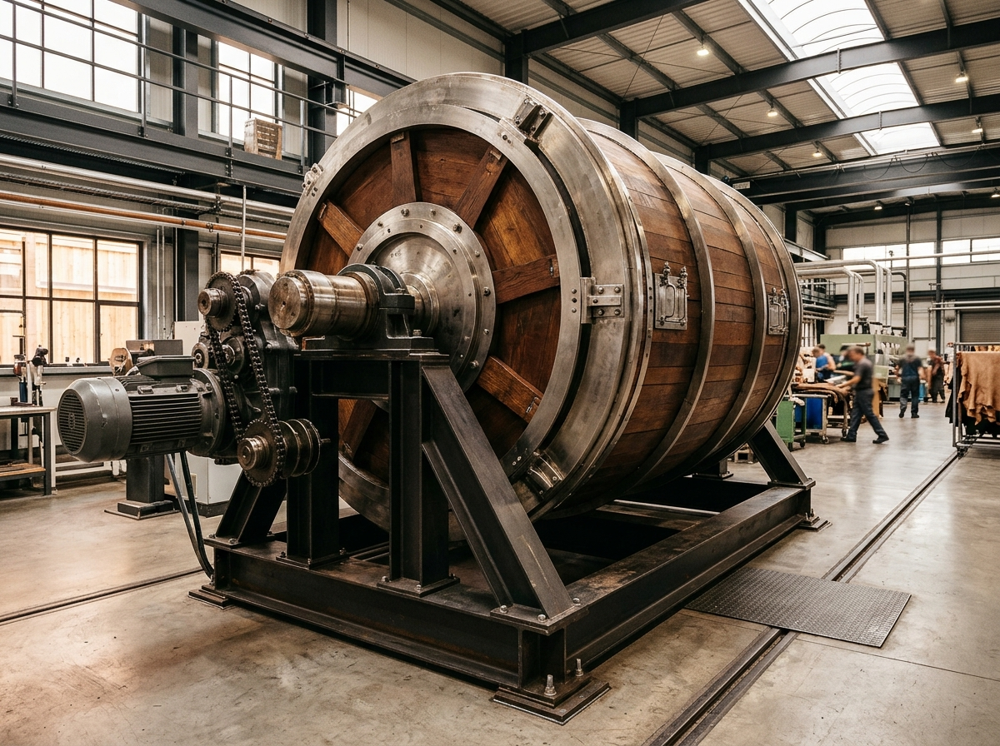

LE-D240
Beamhouse & Tanning
Hardwood & SS316 Tanning Drum
Automated liming, chrome/vegetable tanning, and milling drum in seasoned Iroko timber with programmable VFD reverse cycles.
Drum Size
2,400 × 2,000 mm
Wet Load
1,800 – 2,200 kg
Drive Power
18.5 kW VFD